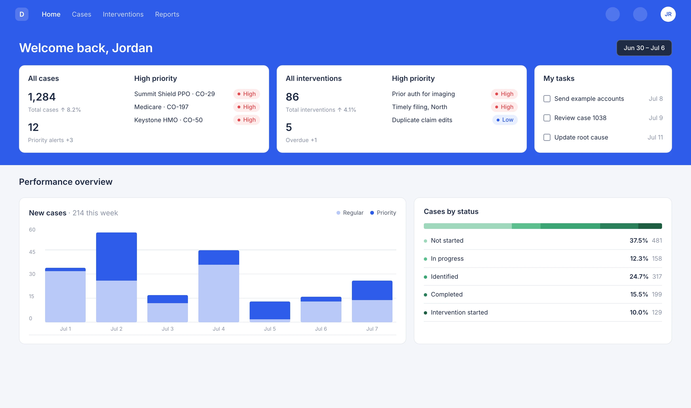
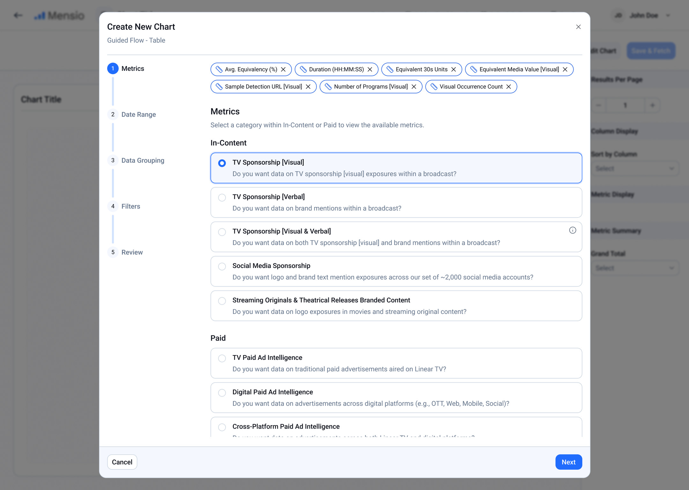
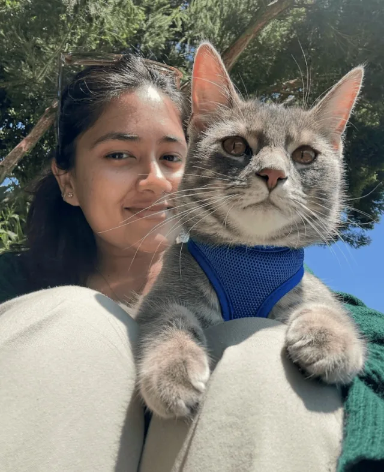

Hi, I'm Anoushka
I'm a product designer at Deploy. I build products from 0–1 and the systems that scale them   . I care about accessibility, and I like untangling complex dashboards
. I care about accessibility, and I like untangling complex dashboards

Experience
- NowDeployUX / UI Designer
- 2025Deploy (then Hive)UX / UI Design Intern
- 2025The Michigan DailyProduct Designer
- 2023PawsncareFreelance Graphic Designer
- 2022EntrupyKnowledge Ops / Authentication Specialist
- 2021inextGraphic Designer
Say hi
Open to new opportunities. Reach out if you wanna be friends or colleagues!
Built with HTML, CSS and JavaScript, with help from Claude Code. Set in Libre Baskerville and Inter.